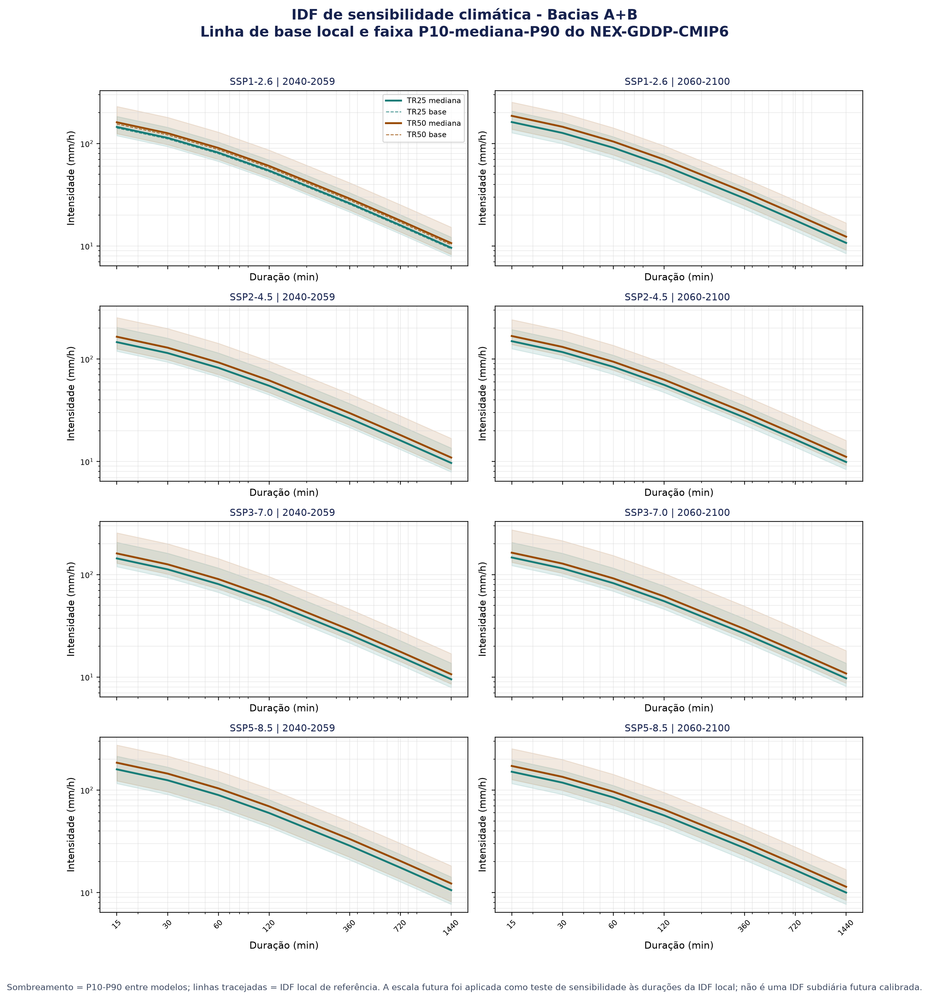
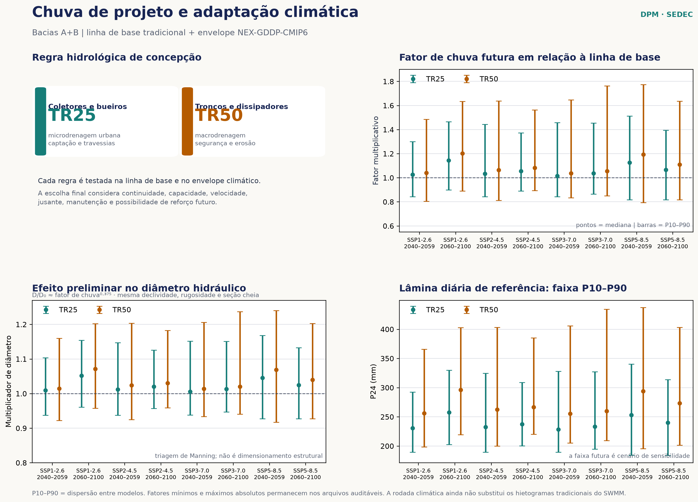

6. IDFs futuras, incerteza e reconstrução adaptada
Acesse a plataforma oficial para consultar as curvas IDF, os cenários climáticos e os fatores de mudança para os municípios.
6.1 Por que um capítulo específico
Chuvas de projeto não são valores fixos fora do tempo. Uma rede que funciona apenas sob a linha histórica pode perder margem de segurança durante a vida útil, especialmente quando há aumento de impermeabilização, ocupação urbana e concentração do escoamento. Por isso, a reconstrução das Bacias A e B será avaliada em dois planos complementares: a linha de base hidrológica usada no relatório anterior e um conjunto de cenários que testa a sensibilidade do sistema a mudanças na precipitação extrema, em diálogo com a base física e os cenários do IPCC ([9]).
O objetivo não é vender uma previsão única, mas mostrar com transparência o que permanece robusto, o que se torna crítico e o que precisa ser adaptável. Essa forma de comunicação aproxima o relatório de ferramentas públicas de projeção de IDF, como o projeto do NRCC/Cornell, que organiza a leitura por período de retorno, cenário, horizonte temporal e faixa de incerteza (NY Projected IDF Curves - NRCC/Cornell).
6.2 Estrutura de apresentação das IDFs
Para cada cenário e período, a apresentação deverá permitir a leitura de:
- período de retorno: TR25 e TR50 como referência desta concepção preliminar;
- período do IDF-MC: P1 (2015–2040), P2 (2041–2070) e P3 (2071–2100); esses períodos substituem as janelas simplificadas usadas nos gráficos exploratórios anteriores;
- cenário socioambiental: SSP1-2.6, SSP2-4.5, SSP3-7.0 e SSP5-8.5;
- curva central: mediana dos modelos válidos;
- margem de incerteza: faixa P10-P90, acompanhada dos valores mínimo e máximo para auditoria;
- duração: a curva local é mostrada de 15 minutos a 24 horas, sempre com a ressalva de que a projeção disponível é diária.
O gráfico abaixo usa a mesma lógica de um painel de IDFs projetadas: cada quadro corresponde a um cenário e período; as linhas mostram a mediana para TR25 e TR50; o sombreamento mostra p10–p90; as linhas tracejadas são a IDF local de referência. Como os arquivos gráficos foram produzidos na etapa exploratória anterior, eles devem ser lidos como teste de sensibilidade, e não como autorização para substituir automaticamente as chuvas no SWMM.


6.3 Método adotado nesta versão — IDF-MC
A análise climática desta versão passa a utilizar como fonte primária o Portal IDF-MC da SEDEC/MIDR ([8]). A ferramenta fornece uma cadeia de cálculo versionada para ir da chuva observada às curvas IDF sob cenários de mudança do clima, com fatores por modelo, quantis do conjunto, períodos de retorno equivalentes e salvaguardas de qualidade. O artigo de Maity e Maity (2022) ([7]) e o painel do NRCC/Cornell permanecem como referências de apresentação e comparação conceitual; não são a fonte dos números publicados nesta seção.
Para Conde/PB, código IBGE 2504603, a ficha oficial está publicada no release 2026.08.002, com um ponto climático publicado, baseline de 44 anos (1981–2024) e status com_dados. A consulta auditável está disponível na API do município de Conde. A cópia dos fatores usados para a leitura TR25/TR50 está em CSV e os metadados em JSON.
A sequência adotada pelo IDF-MC é:
- reúne as máximas anuais de precipitação diária observada na janela 1981–2024 e ajusta a distribuição de Gumbel pelo método dos momentos;
- converte a chuva diária para 24 horas pelo fator 1,13 e desagrega as durações curtas pela cascata DAEE/CETESB;
- ajusta a mesma distribuição para cada modelo na janela histórica 1950–2014 e na janela futura selecionada;
- calcula, para cada tempo de retorno, a razão entre o quantil futuro e o quantil histórico do mesmo modelo;
- resume o conjunto por p10, p50 e p90, sempre informando o número de modelos válidos;
- aplica o fator à chuva observada de projeto. Assim, para a cadeia publicada, a IDF futura é a IDF presente multiplicada pelo fator correspondente.
Esta mudança corrige a descrição anterior, que apresentava uma adaptação independente com GEV e amostra NEX-GDDP como se fosse a metodologia principal. A amostra NEX-GDDP e os gráficos anteriores ficam preservados como material exploratório/histórico; os fatores IDF-MC são os adotados para a análise de adaptação desta versão. Onde uma grandeza não puder ser determinada pela ferramenta ou pelos dados de projeto, ela deve permanecer como null, sem estimativa artificial.
6.3.1 Estrutura técnica da IDF e análise de frequência
A organização desta subseção segue a documentação do IDF-MC e o padrão de apresentação técnica adotado nas notas de IDF consultadas. O objetivo é explicitar a origem dos dados, a equação, a formação das séries de extremos, a comparação entre a linha de base e o futuro e a incerteza do conjunto. A formulação é apresentada em diálogo com a literatura de relações IDF ([28]) e com a referência metodológica de IDFs sob mudança climática ([7]). Parâmetros, períodos e resultados de outros estados não são transferidos para Conde.
Agregação dos fatores e tradução para a chuva de projeto
O procedimento de adaptação climática separa três objetos que não devem ser confundidos: a linha de base, que representa a chuva de projeto atualmente adotada; a projeção climática, que representa a alteração relativa indicada pelo conjunto de modelos; e o envelope de incerteza, que expressa a dispersão entre os modelos. Essa separação segue a cadeia publicada pelo Portal IDF-MC da SEDEC/MIDR ([8]), em diálogo com a literatura de IDFs sob mudança climática ([7]) e com a recomendação do IPCC de explicitar cenários, períodos e incertezas ([9]).
Para cada modelo m, cenário c, período futuro p e tempo de retorno T, o IDF-MC compara o quantil futuro com o quantil histórico do mesmo modelo. O cálculo relativo reduz a influência do viés médio de cada modelo e conserva a resposta de mudança climática específica daquele membro do conjunto:
Os fatores individuais são então ordenados e resumidos por quantis empíricos. Se \(\mathcal{F}_{c,p}(T)\) é o conjunto dos fatores válidos para uma combinação de cenário, período e recorrência, o envelope adotado é ([7], [8]):
Assim, p10, p50 e p90 não são intervalos de confiança estatística da estação. São posições do conjunto de modelos e devem ser lidas como uma faixa de sensibilidade climática. A contagem de modelos válidos acompanha cada fator; modelos sem dados suficientes ou sem quantil calculável não entram silenciosamente no denominador. Também não se calcula uma “chuva média dos modelos” para substituir a linha de base: primeiro se calcula o fator por modelo e depois se resume a distribuição desses fatores.
A tradução do fator para a chuva de projeto é multiplicativa, preservando a linha de base observada e tornando explícita a hipótese de transferência de escala. Para intensidade média e precipitação acumulada, respectivamente:
Quando o fator oficial estiver disponível apenas para uma duração de referência, a aplicação às durações menores é uma hipótese de sensibilidade, e não uma nova IDF futura validada. No projeto básico, cada duração utilizada no SWMM deverá ser sustentada por dados subdiários, desagregação validada e documentação do release. A conversão de chuva acumulada em hietograma deve conservar o padrão temporal da chuva de base apenas como aproximação preliminar, pois a distribuição temporal é uma etapa distinta da relação IDF ([27]):
O procedimento produz, portanto, uma família de hietogramas identificada por cenário, período, quantil e recorrência. Para esta concepção, TR25 é aplicado à sensibilidade de coletores e bueiros e TR50 à sensibilidade de troncos principais e dissipadores. A linha de base BASE_TR25 e BASE_TR50 permanece intacta, enquanto cada combinação IDFMC_[cenário]_[período]_[p10|p50|p90]_TR25 ou ..._TR50 é rodada separadamente no SWMM. Nenhuma projeção sobrescreve a entrada tradicional.
| Etapa | Operação metodológica | Registro obrigatório |
|---|---|---|
| 1. Base | Selecionar a IDF/chuva de projeto de referência e o padrão temporal utilizado no SWMM. | fonte, equação, TR, duração, unidade e arquivo da série temporal |
| 2. Modelos | Ajustar ou consultar os quantis históricos e futuros para cada modelo, cenário e período. | modelo, janela temporal, ponto/célula, distribuição e número de anos válidos |
| 3. Fator | Calcular \(FC_{m,c,p}(T)\) como razão futuro/histórico do mesmo modelo. | fator individual e regra de exclusão de valores inválidos |
| 4. Envelope | Resumir os fatores por p10, p50 e p90, sem ocultar a dispersão do conjunto. | quantil, contagem de modelos e release do IDF-MC |
| 5. SWMM | Multiplicar a chuva de base pelo fator e simular cada família de entrada separadamente. | arquivo do hietograma, cenário, período, quantil, TR e resultados hidráulicos |
Na leitura hidráulica, a comparação deve alcançar a vazão de pico, o volume escoado, o enchimento, a sobrecarga, a velocidade, a energia na saída e a condição dos dissipadores. O fator climático não é aplicado diretamente ao diâmetro como se fosse uma relação linear. Para uma triagem de conduto circular em regime cheio, a aproximação de Manning pode orientar a ordem de grandeza, mas não substitui a verificação de nível, declividade, material, perdas, remanso, conexão e condição de jusante. O resultado final deve mostrar a faixa de desempenho entre p10 e p90, com p50 como referência central, e não apenas um único dimensionamento.
Linha de base local e forma funcional
A linha de base climática do IDF-MC para Conde usa máximas anuais diárias de 1981–2024, com 44 anos válidos. A distribuição Gumbel ajustada por momentos pode ser escrita como ([8], [28]):
Na parametrização retornada pela API, alpha é o parâmetro de escala e beta o parâmetro de posição. A ficha oficial informa, para Conde, alpha = 23,5415 e beta = 70,665924; esses valores reproduzem a média informada pela ficha (beta + gamma x alpha, com gamma igual à constante de Euler–Mascheroni). O valor de 24 horas é obtido pela conversão fixa de 1,13. A curva tradicional da estação, usada na rodada-base do SWMM, continua sendo mantida para comparação e para não misturar automaticamente fontes com naturezas distintas. A forma de quantil apresentada é uma parametrização clássica de extremos e deve ser lida em conjunto com a documentação do IDF-MC ([8]) e com a literatura de relações IDF ([28]).
Formação das séries de extremos
O IDF-MC reúne as máximas anuais da chuva diária observada por município, preserva a janela e o número de anos e registra a fonte e o critério espacial. Para Conde, a célula observada associada à mancha urbana é identificada na ficha oficial, com uma baseline municipal compartilhada pelo ponto climático publicado. A cadeia climática não deve ser confundida com a série NEX-GDDP usada nos ensaios exploratórios anteriores: a NEX continua como referência de contexto, enquanto o número oficial desta seção vem do release do IDF-MC.
Ajuste de extremos, quantis e comparação entre fontes
Para cada modelo climático, a Gumbel é ajustada na janela histórica 1950–2014 e na janela futura do cenário/período. O fator de mudança é calculado para o mesmo modelo e tempo de retorno, conforme a comparação relativa adotada pelo IDF-MC ([8]) e a literatura de IDFs em clima não estacionário ([7]):
O conjunto é resumido por p10, p50 e p90 e acompanhado da quantidade de modelos válidos. Para Conde, o release informa 31 modelos em SSP126, 30 em SSP245, 25 em SSP370 e 33 em SSP585. A IDF tradicional da estação permanece como referência operacional do SWMM; o fator IDF-MC é o envelope de adaptação.
| Elemento | Tratamento adotado em Conde | Limite de interpretação |
|---|---|---|
| Observação local/IDF | linha de base do relatório anterior | referência principal para a concepção |
| Modelos climáticos do IDF-MC | Gumbel por modelo, janela e ponto climático | não substituem a série subdiária observada |
| Conjunto de modelos | p10, p50 e p90; contagem de modelos válidos | cada valor conserva a dispersão e o número de modelos |
| TR25 e TR50 | quantis e fatores para as duas recorrências | TR25 orienta coletores/bueiros; TR50, troncos/dissipadores |
| Validação | comparação com a referência local e auditoria de amostra | RMSE, viés ou outros indicadores ficam null quando não determinados |
Essa separação evita misturar uma curva IDF observada com uma projeção diária sem subdiárias. A futura atualização para projeto básico deverá ajustar as durações relevantes diretamente, testar distribuições alternativas, estimar intervalos de confiança e validar os hietogramas no SWMM. Até essa etapa, os resultados climáticos são envelopes de decisão para adaptação, e não uma nova equação IDF definitiva.
6.3.2 Como a incerteza será levada ao SWMM
Os arquivos tradicionais TR25 e TR50 permanecem como linha de base sem mudança climática. A rodada climática será construída como uma família de entradas identificadas a partir dos fatores do IDF-MC, sem sobrescrever os modelos tradicionais:
| Família de entrada | Aplicação | Saídas a comparar |
|---|---|---|
BASE_TR25 |
coletores e bueiros | vazão de pico, enchimento, velocidade e nós críticos |
BASE_TR50 |
troncos principais e dissipadores | vazão de pico, capacidade, velocidade e saída |
IDFMC_[cenário]_[período]_TR25 |
sensibilidade de coletores e bueiros | variação em relação à base TR25 |
IDFMC_[cenário]_[período]_TR50 |
sensibilidade de troncos e dissipadores | variação em relação à base TR50 |
Para cada cenário e período serão consideradas, no mínimo, as três posições do envelope: p10, p50 e p90. A cópia de trabalho contém os fatores oficiais de Conde para TR25 e TR50, mas a decisão deverá continuar vinculada à consulta do release e à confirmação das durações. A comparação deverá registrar o número de links acima da capacidade, nós inundados, volume extravasado, vazões nos dissipadores, velocidades, diâmetros candidatos e necessidade de reforço.
Na triagem de condutos circulares, um aumento de vazão F não implica aumento linear de diâmetro. A aproximação de escala para um conduto em condições comparáveis é:
Para estruturas de dissipação, entretanto, o aumento de vazão altera também energia, velocidade, ressalto, arraste e risco de erosão; por isso, a adaptação será apresentada por vazão e desempenho da estrutura, e não por uma simples porcentagem de aumento dimensional.
6.3.3 O que é o NEX-GDDP-CMIP6 e qual é seu papel
O NEX-GDDP-CMIP6 é a coleção NASA Earth Exchange Global Daily Downscaled Projections, baseada no Coupled Model Intercomparison Project Phase 6. Em termos práticos, é um conjunto de projeções climáticas diárias de modelos globais do CMIP6, processadas para uma grade de aproximadamente 0,25 grau e disponibilizadas para o período histórico e para cenários futuros SSP1-2.6, SSP2-4.5, SSP3-7.0 e SSP5-8.5 ([6], [17]).
A coleção aplica BCSD (Bias-Correction Spatial Disaggregation), que combina correção estatística de viés, incluindo mapeamento de quantis, e desagregação espacial com base em uma referência histórica. A correção melhora a comparabilidade estatística, mas não transforma a grade em observação local: a resolução aproximada de 25 km não descreve diretamente a chuva em uma rua, quadra ou galeria. A documentação da NASA também alerta que o uso em engenharia deve ser acompanhado de avaliação especializada e validação local ([6], [18]).
É importante separar a coleção oficial da tabela de trabalho usada neste projeto. O recorte local contém a máxima diária anual prec_max_anual por ponto, modelo, cenário e ano, com 34 modelos disponíveis. A documentação técnica da versão oficial consultada descreve 35 modelos; essa diferença decorre do recorte local e deve permanecer registrada. Como a tabela não contém a série diária completa nem observações subdiárias, ela não gera automaticamente uma IDF futura de 5 minutos.
A operação realizada no recorte pode ser representada por:
em que g é a célula de grade, m é o modelo, c é o cenário, y é o ano e d representa os dias do ano. Para comparar uma janela futura p com o histórico do mesmo modelo, calcula-se:
Os fatores são resumidos por p10, p50 e p90 e mantidos junto da contagem de modelos válidos. Nesta concepção, o NEX-GDDP-CMIP6 é uma fonte complementar de sensibilidade e contexto. A fonte operacional dos fatores climáticos aplicados à apresentação das IDFs é o Portal IDF-MC da SEDEC/MIDR, que possui sua própria cadeia de observação, ajuste, desagregação e agregação de incerteza. Assim, não se misturam silenciosamente uma projeção diária de grade, uma IDF observada e um hietograma subdiário.
6.4 Fatores oficiais por cenário e período
O quadro resume os fatores multiplicativos publicados pelo IDF-MC para Conde. Um fator 1,20, por exemplo, significa que o quantil futuro mediano é 20% maior que o histórico do mesmo modelo para aquela combinação de período de retorno e janela; não significa que toda chuva futura será 20% maior. Os fatores p10/p50/p90 abaixo são fatores climáticos, não intensidades em mm/h.
| Cenário | Período | TR25: p10 / p50 / p90 | TR50: p10 / p50 / p90 | Modelos |
|---|---|---|---|---|
| SSP1-2.6 | P1 (2015–2040) | 0,9288 / 1,0779 / 1,3123 | 0,9285 / 1,0814 / 1,3577 | 31 |
| SSP1-2.6 | P2 (2041–2070) | 0,8911 / 1,0838 / 1,3074 | 0,8870 / 1,0873 / 1,3472 | 31 |
| SSP1-2.6 | P3 (2071–2100) | 0,9191 / 1,1118 / 1,5122 | 0,9097 / 1,1456 / 1,5766 | 31 |
| SSP2-4.5 | P1 (2015–2040) | 0,8780 / 1,0396 / 1,2936 | 0,8692 / 1,0413 / 1,3401 | 30 |
| SSP2-4.5 | P2 (2041–2070) | 0,8944 / 1,0380 / 1,3356 | 0,8816 / 1,0462 / 1,3629 | 30 |
| SSP2-4.5 | P3 (2071–2100) | 0,8755 / 1,1295 / 1,3232 | 0,8743 / 1,1558 / 1,3714 | 30 |
| SSP3-7.0 | P1 (2015–2040) | 0,8810 / 1,0523 / 1,5105 | 0,8788 / 1,0701 / 1,5821 | 25 |
| SSP3-7.0 | P2 (2041–2070) | 0,8367 / 1,1115 / 1,2785 | 0,8373 / 1,1154 / 1,3258 | 25 |
| SSP3-7.0 | P3 (2071–2100) | 0,8762 / 1,0070 / 1,4031 | 0,8673 / 1,0080 / 1,4663 | 25 |
| SSP5-8.5 | P1 (2015–2040) | 0,9351 / 1,1083 / 1,3454 | 0,9359 / 1,1312 / 1,3819 | 33 |
| SSP5-8.5 | P2 (2041–2070) | 0,8270 / 1,0755 / 1,4049 | 0,8322 / 1,0932 / 1,4700 | 33 |
| SSP5-8.5 | P3 (2071–2100) | 0,8754 / 1,0730 / 1,2598 | 0,8735 / 1,0950 / 1,3059 | 33 |
Há dois ensinamentos institucionais nesse quadro. Primeiro, a mediana não cresce de forma monotônica em todos os cenários e períodos; portanto, uma decisão baseada em um único fator pode ocultar a dispersão. Segundo, as faixas são amplas em alguns casos, especialmente para TR50. Isso recomenda soluções sem arrependimento: continuidade hidráulica, controle de erosão, dissipação segura, acesso para manutenção, proteção a jusante e possibilidade de reforço futuro.
6.5 O que ainda falta para uma IDF futura de projeto
O resultado atual não deve ser aplicado diretamente aos arquivos .inp do SWMM. Para uma futura contratação ou projeto básico, a atualização deverá incluir:
- série observada de máximas anuais e, idealmente, séries subdiárias da estação de referência;
- verificação da homogeneidade, falhas e representatividade espacial da estação;
- consulta ao release vigente do IDF-MC, com registro da versão, ponto, cenário, período e número de modelos;
- verificação da janela observada, da célula climática, da cobertura da mancha urbana e dos avisos da ficha de Conde;
- ajuste de extremos e desagregação conforme a cadeia Gumbel–1,13–DAEE/CETESB publicada pelo IDF-MC;
- definição do horizonte de projeto compatível com a vida útil, manutenção e possibilidade de expansão;
- atualização dos hietogramas e execução comparativa no SWMM, registrando pico, volume, inundação, velocidade e solicitação dos dissipadores.
Até lá, os fatores devem ser usados como cenários de triagem. A rede será considerada robusta quando continuar atendendo aos critérios essenciais em mais de uma premissa, ou quando houver medidas físicas e operacionais explícitas para os casos em que a capacidade seja excedida.
6.6 Reconstrução resiliente, sustentável e adaptada
O valor do projeto não está apenas em dimensionar uma tubulação. Está em transformar o diagnóstico de erosão e alagamento em uma decisão de reconstrução que reduza risco futuro. Para isso, a proposta adota cinco premissas:
- Conceber o sistema e executar o essencial. O plano reconhece a drenagem completa das Bacias A e B, mas prioriza troncos principais, coletores indispensáveis e dissipadores nos setores críticos.
- Não transferir o risco. Toda meta deve ser ligada a uma área contribuinte, a um caminho de escoamento, a uma descarga e a uma proteção a jusante.
- Projetar para manutenção e adaptação. Acesso, limpeza, inspeção, proteção contra erosão e possibilidade de reforço devem integrar a solução desde a concepção.
- Combinar infraestrutura cinza e medidas sustentáveis. Sempre que tecnicamente compatível, devem ser avaliadas soluções de retenção temporária, infiltração, revegetação, proteção de solo, redução de velocidade e controle na origem.
- Usar a mudança climática como teste de robustez. A decisão deve considerar a linha de base e as faixas futuras, priorizando medidas que funcionem sob diferentes cenários e evitando investimentos que dependam de uma única previsão.
Essa abordagem dá conteúdo técnico ao princípio de reconstruir melhor (Build Back Better; [12]): a reconstrução deixa de ser mera reposição do que falhou e passa a ser uma oportunidade de reduzir vulnerabilidade, proteger a população e preparar a infraestrutura para condições futuras. No Plano de Trabalho, a adaptação climática será tratada como critério de priorização e de desempenho, não como justificativa para inflar quantitativos sem evidência.
6.7 Integração com o SWMM e com o Plano de Trabalho
Os cenários climáticos serão incorporados ao SWMM somente depois de concluída a rodada tradicional TR25/TR50 e de validados os trechos, áreas de contribuição e dissipadores das Bacias A e B. Para cada cenário aplicado, o relatório deverá registrar:
- chuva de entrada, fator ou curva utilizada e fonte;
- nós com inundação e links acima da capacidade;
- vazão de chegada nos dissipadores e condições de jusante;
- trechos que permanecem críticos em todos os cenários;
- medidas de adaptação, reforço ou monitoramento propostas.
Os trechos que permanecerem críticos e cuja implantação reduzir risco nas áreas de metas serão candidatos ao Plano de Trabalho. As demais ocorrências fora das Bacias A e B continuam fora do escopo desta modelagem e deverão ser tratadas em frentes específicas.
6.8 Referências e dados auditáveis
- Metodologia adaptada para IDF e mudança climática.
- Avaliação climática em JSON.
- Fatores por cenário e período (arquivo exploratório).
- Fatores por modelo.
- Painel de IDFs e incerteza.
- Painel de chuva de projeto e adaptação.
- Dados NEX-GDDP-CMIP6 amostrados.
- Portal IDF-MC da SEDEC/MIDR.
- Metodologia oficial do IDF-MC.
- Ficha da API para Conde/PB (2504603).
- Fatores oficiais IDF-MC de Conde para TR25/TR50.
- Metadados do recorte oficial de Conde.
- Maity e Maity (2022), Changing Pattern of Intensity–Duration–Frequency Relationship of Precipitation due to Climate Change.
- Thrasher et al. (2022), NASA Global Daily Downscaled Projections, CMIP6, Scientific Data.
- Thrasher et al. (2012), correção por mapeamento de quantis, Hydrology and Earth System Sciences.
- NY Projected IDF Curves - NRCC/Cornell.
{kind=link}
{kind=link}
As referências completas e numeradas desta seção estão no Capítulo 8 — Referências e rastreabilidade metodológica.